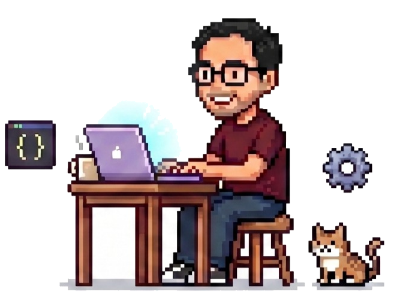

⚔️ Keahlian
PHP
Laravel
Lumen
Lumen
Golang
Kafka
K8s
Docker
MySQL
Redis
Git
Cloudflare
AI Agents
Andantara

Backend Developer & System Analyst — bikin microservice, analisis sistem, dan debug dari log sampai ketemu pemilik kodenya lewat git blame. Kalau sumbernya ada di sistem downstream, tinggal diarahkan ke PIC terkait.
PHP (Lumen/Laravel), Golang, MySQL, Redis, Git. Trace error sampai akarnya: baca stack trace, telusuri query yang lambat, cocokkan dengan commit terakhir. Terbiasa di ekosistem enterprise banking & core banking.
Investor multi-aset: mengelola keuangan pribadi dengan prinsip disiplin dan jangka panjang.
Developer by day, AI agent whisperer by night. Asisten AI pribadiku Hermes kerjanya jujur dan gak suka basa-basi: kalau datanya belum cukup, dia bilang belum cukup.
Ketertarikanku dari awal ada di dua bidang sekaligus: sistem informasi dan pengembangan perangkat lunak. Aku mulai dari analis performa di industri manufaktur, pindah jadi web developer dan backend engineer untuk sistem enterprise, dan sekarang jadi System Analyst di PT Bank Rakyat Indonesia (Persero) Tbk. Kerjaku fokus di BRISPOT, platform mikro perbankan yang dipakai mantri dan nasabah bisnis mikro.
Aku kerja di dua sisi: analisis sistem (baca kebutuhan bisnis, rancang solusi, tulis dokumentasi teknis) dan engineering (nulis kode produksi, debug dari log, optimasi query, automasi pakai AI agent). Di banking aku sudah lewat core banking, API gateway, layanan autentikasi, dan integrasi sistem eksternal, jadi sistem yang serba ketat dan gak boleh mati itu bukan hal baru buatku.
Yang sedang kugarap sekarang: analisis & desain sistem untuk BRISPOT Micro, aktif nyoba AI agent buat kerjaan engineering (debug, dokumentasi, report otomatis), dan jaga investasi pribadi tetap disiplin.
System Analyst · On-site · Jakarta
Naik level setelah lulus dari program trainee. Sekarang ngurus system analysis & design: bikin blueprint biar tim backend gak bingung mau ngoding apa.
Di BRISPOT Micro aku pegang analisis dan desain sistem: memetakan kebutuhan bisnis mantri, merancang alur integrasi antar microservice (PHP Lumen & Golang), menyusun dokumentasi teknis, dan mastiin tiap perubahan tetap sesuai arsitektur yang ada. Kerjanya bareng tim developer, QA, dan stakeholder bisnis, dari requirement sampai implementasi.
↓ sebelumnya di sini juga: IT Trainee Program (Mei 2025 — Jan 2026)
Training intensif: belajar core banking, OJT di cabang, rotation jadi Backend Engineer. Di sini aku lihat langsung operasional bank dan sistem intinya dari dalam.
Back End Developer · Contract · On-site · South Jakarta
Di-placement ke project backend skala enterprise — maintain & build service pake PHP & Golang. Kodean produksi jalan terus, dan tiap rilis punya tenggat sendiri.
Di sini aku belajar bangun dan rawat microservice di banking: API gateway, layanan autentikasi, integrasi data, sampai observability pakai Grafana/Loki buat ngejar error produksi. CI/CD, code review, dan koordinasi lintas tim saat insiden jadi rutinitas.
Programmer · Contract · On-site · South Jakarta
Bikin performance management apps based on KPI & OKR. Full-stack warrior: requirement gathering, design database, ngoding, testing, sampe deployment. Laravel + MySQL.
Web Developer · Freelance
Freelance web dev — support pengembangan modul ERP project pake Laravel. Mostly backend, kadang frontend kalo lagi butuh.
Performance Management Analyst · Contract · Mojokerto
Karir dimulai di sini — evaluate system performance, ngasih saran efisiensi, dan bikin web app internal (CodeIgniter + MySQL) buat otomatisasi scoring KPI.
Bachelor's — Management Information Systems
Kuliah di Malang, aktif di Raion Studio, komunitas anak kreatif kampus. Di situ pertama kali aku ngoding bareng orang lain sampai pagi.